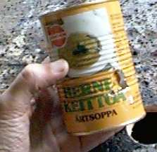
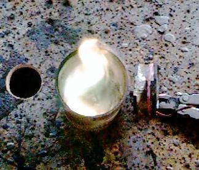

This page explains how to make safe and reliable
kerosene burner out of tin can.
Firstly you remove the lid and devour the rokka aka soppa
Then you fill the bottom loosely with tissue paper and pull a sort of wick trough small hole in the lid. You push the lid to the bottom of the can.

Small C-shaped opening pressed slightly inward causes the incoming air to move in a twirling fashion inside the can.
Then you fill the can with some teaspoonfuls of kerosene and boldly light the wick.
Momentarily the kerosene under the lid will heat up and the fire intensifies.
Promptly you start small Pentium class (one watt) electric fan near the C-shaped opening.

You carefully adjust the position of the fan for beautiful white blue spinning flame. Optimally tuned flare stays inside the can.
To put out the fire, you stop the fan and close the can with the bottom of your cooking pot.
Timo Noko (c) 1999